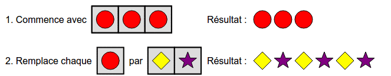
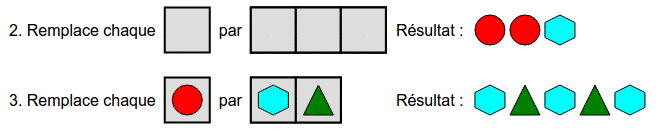
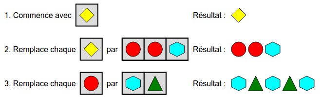
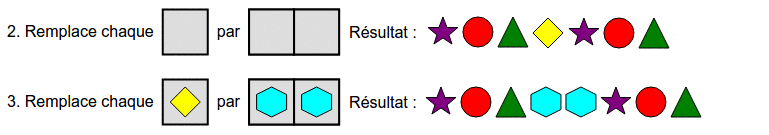
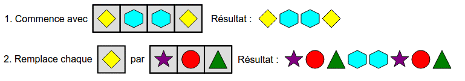
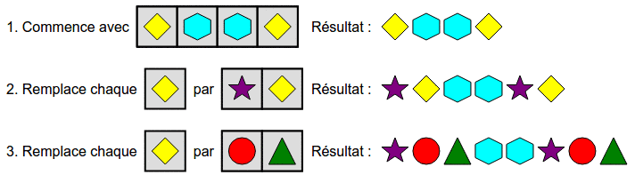

En faisant glisser les formes ci-dessous dans les cases grises, construisez un programme permettant d'obtenir le motif souhaité.
Remarque : les données de la correction ne correspondent pas forcément à celles de votre sujet, mais le principe reste le même.
On remarque que le résultat souhaité est composé de trois fois la même paire de formes : un losange puis une étoile.
On peut donc choisir une forme, n'importe laquelle, par exemple le rond rouge, et en poser 3 copies à la suite. Ensuite, on remplace chaque copie de cette forme par un losange suivi d'une étoile.

Une approche efficace est de partir de la fin : on remarque que le résultat est composé de deux paires (hexagone, triangle) identiques, puis d'un hexagone. Comme le dernier remplacement remplace une forme par une paire, on peut en déduire qu'à l'étape précédente, une même forme, par exemple un rond, devait prendre la place des deux paires (hexagone, triangle). La dernière étape ressemble donc à ceci :

Pour les opérations du début, on peut commencer par une forme quelconque (par exemple un losange), puis la remplacer par le motif souhaité pour la fin de la seconde étape (rond, rond, hexagone) :

Observons le résultat souhaité : il est constitué d'un bloc de trois formes (étoile, rond, triangle), suivi de deux hexagones, et enfin suivi du même bloc de trois formes qu'au début (étoile, rond, triangle).
On pourrait essayer, à l'étape 3, de remplacer une forme par deux hexagones. Cependant, si l'on part sur cette voie, il ne restera pas assez d'étapes pour construire la séquence restante :

On est donc obligé d'effectuer des opérations qui remplacent plusieurs formes d'un coup. En fait, ce que l'on aimerait faire, c'est pouvoir remplacer une forme directement par une séquence de trois formes (étoile, rond, triangle). Si on avait la possibilité de remplacer une forme par trois, on pourrait faire :

On n'a pas la possibilité de remplacer d'un coup un losange par trois formes (étoile, rond, triangle). Néanmoins, on peut obtenir un effet similaire en s'y prenant en deux étapes : d'abord on remplace les losanges par une étoile suivi d'un losange, puis on remplace les nouveaux losanges par un rond suivi d'un triangle. Ceci nous donne la solution suivante :

Ce sujet exploite le mécanisme de chercher-remplacer, et permet de réfléchir à ce qu'il se passe lorsqu'on effectue plusieurs opérations de chercher-remplacer à la suite.
Le chercher-remplacer est très utile en informatique, en particulier dans les outils de traitement de texte.